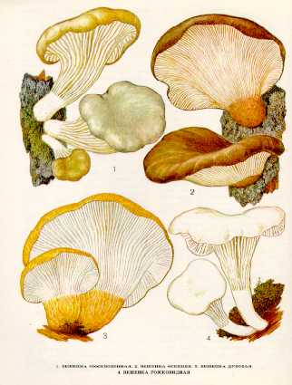

1. ВЕШЕНКА ОБЫКНОВЕННАЯ. УСТРИЧНЫЙ ГРИБ
Растет на пнях, стволах, на живых ослабленных и сухостойных деревьях различных лиственных пород с июня до осенних морозов, часто очень большими группами, срастаясь ножками в пучки.
Шляпка боковая, полукруглая, уховидная,
раковинообразная, у молодых грибов с загнутым вниз краем, до
Пластинки нисходящие по ножке, редкие, толстые, белые (потом желтеют), около ножки с перемычками. Споровый порошок белый или слегка розоватый.
Ножка короткая, до
Молодой гриб съедобен, четвертой категории. Употребляется вареным, соленым и маринованным.
2. ВЕШЕНКА ОСЕННЯЯ. СВИНУХА ИВОВАЯ
Растет на пнях и стволах вяза, клена, осины, тополя, липы в сентябре - октябре, группами, часто срастаясь ножками.
Шляпка однобокая, часто вытянутая,
языковидная, до
Пластинки нисходящие, сначала белые, с возрастом грязно-серовато-бурые. Споровый порошок чисто-белый или светло-фиолетовый.
Ножка до
Молодой гриб съедобен, четвертой категории. Употребляется как
вешенка обыкновенная.
3. ВЕШЕНКА ДУБОВАЯ
Растет преимущественно на дубовых
и ильмовых валежных стволах и пнях в июле — августе.
Шляпка до
Пластинки нисходящие
по ножке, белые, затем желтеющие. Споровый порошок белый. Споры цилиндрические,
бесцветные.
Ножка сильноэксцентрическая,
до
Малоизвестный съедобный гриб. Употребляется свежим.
4. ВЕШЕНКА РОЖКОВИДНАЯ
Селится на валежных стволах и пнях вязов и кленов.
Растет с третьей декады мая до середины августа, часто большими группами.
Шляпка достигает
Мякоть толстая, плотная, белая, вкус и запах приятные.
Пластинки далеко нисходящие по ножке, белые или
слабо-желтоватые, редкие. Споровый порошок белый. Споры удлиненно-овальные.
Ножка короткая — длиной
Гриб съедобен, четвертой категории. Обладает высокими вкусовыми качествами.
Употребляется свежим, молодые грибы можно мариновать и солить. В Японии, Китае и
у нас в Приморском крае этот гриб выращивают на валежных вязах.